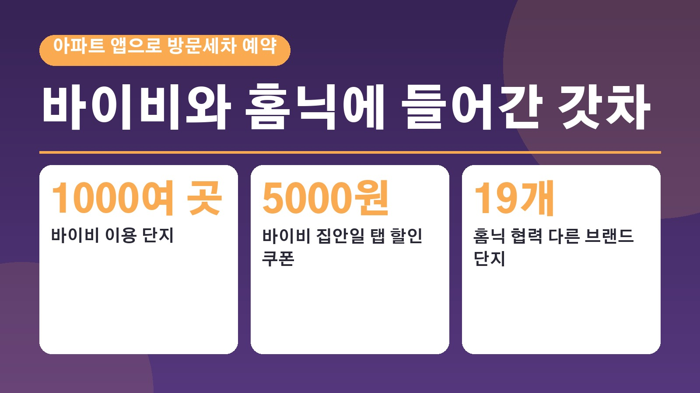
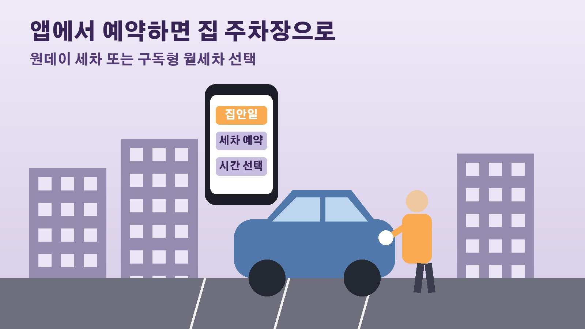

세차장 안 가고 아파트 앱으로 부르는 방문세차, 바이비와 홈닉에 들어간 갓차 서비스 이용법

주말마다 세차장에 줄 서는 게 번거로워 방문세차를 알아본 분들 계실 거예요. 그런데 요즘은 따로 세차 앱을 깔지 않아도 우리 아파트 입주민 앱 안에서 바로 세차를 예약할 수 있는 단지가 늘고 있습니다. 파이낸셜뉴스는 10월 13일 아파트 플랫폼 경쟁이 조명과 난방 제어를 넘어 세차 같은 생활 편의서비스까지 앱 하나로 묶는 방향으로 가고 있다고 전했는데요. 실제로 어떤 앱에서 어떤 세차 서비스를 쓸 수 있는지 정리해 볼게요.
아파트 앱 안으로 들어온 방문세차
아파트 앱은 원래 관리비 조회, 공지 확인, 커뮤니티 시설 예약, 방문차량 등록 같은 단지 관리 기능이 중심이었습니다. 최근에는 건설사와 플랫폼 회사들이 청소, 출장세차, 의류 수거, 반려동물 돌봄 같은 생활 서비스를 외부 업체와 손잡고 앱 안에 넣고 있어요. 건설사 입장에서는 입주 뒤에도 업데이트와 제휴로 기능을 늘려 가며 입주민과 계속 이어질 수 있는 수단이라는 것이 업계 설명입니다. 세차 이용자 입장에서는 세차장을 오가지 않고 집 주차장에서 세차를 맡길 길이 하나 더 생긴 셈입니다.
바이비 집안일 탭에서 갓차 예약하는 방식
전국 1000여 개 단지, 100만여 명이 쓰는 아파트 생활 플랫폼 바이비는 방문세차 서비스 갓차를 집안일 탭에 연동했다고 9월 29일 밝혔습니다. 입주민이 집안일 탭에서 갓차 메뉴를 고르고 원하는 시간을 예약하면 집 주차장에서 세차부터 차량 점검까지 받을 수 있다고 해요. 필요할 때마다 부르는 원데이 세차와 정기적으로 관리받는 구독형 월세차 가운데 고를 수 있습니다. 연동을 기념해 9월 30일부터 한 달 동안 집안일 탭에서 갓차를 이용하는 입주민에게 5000원 할인 쿠폰을 준다고 하니, 바이비를 쓰는 단지라면 이달 안에 확인해 보세요.
홈닉에도 들어간 출장세차, 쓸 수 있는 단지는
삼성물산 건설부문의 홈플랫폼 홈닉도 세대 청소 청연, 출장세차와 차량 관리 갓차, 반려동물 돌봄 와요, 의류 수거 픽옷 등 생활편의서비스 4종을 추가했습니다. 6월 말 입주를 시작한 부산 SK드파인광안에 먼저 적용한 뒤 홈닉이 도입된 전체 단지로 넓혔다고 해요. 홈닉 도입 이전에 입주한 래미안 단지 주민도 간단한 가입 절차를 거치면 이용할 수 있고, 서비스에 따라 할인 쿠폰이나 포인트를 받거나 일부는 최대 50퍼센트 할인된 가격에 쓸 수 있다고 삼성물산은 밝혔습니다. 홈닉은 한화 건설부문과 두산건설, HS화성, SK에코플랜트 등 19개 다른 브랜드 아파트 단지와도 파트너십을 맺고 있습니다.

갓차는 어떤 방식으로 세차하나
두 앱에 공통으로 들어간 갓차는 2016년 부산에서 창업해 현재 전국 2000여 개 프리미엄 아파트 단지에 방문세차를 제공하고 있다고 소개됩니다. 회사 설명에 따르면 120시간 이상 교육받은 전문 디테일러가 500mL 이하의 물만 써서 세차하고, 10억원 규모의 배상책임보험에 가입해 있다고 합니다. 갓차 측은 그동안 단지마다 직접 계약하던 방식에서 나아가 대형 주거 플랫폼 안에서 더 많은 입주민을 만나게 됐다고 설명했어요.
이용 전 확인할 점
아파트 전용 앱은 모든 단지에 다 깔려 있는 것이 아니라 비교적 최근 분양한 단지 위주로 적용된다는 점부터 알아 두셔야 합니다. 우리 단지가 바이비나 홈닉을 쓰는지 먼저 확인하고, 앱 안에서 갓차 메뉴가 보이는지, 원데이와 월세차 중 무엇이 맞는지, 지금 받을 수 있는 쿠폰이나 할인이 있는지 차례로 살펴보시면 됩니다. 할인과 쿠폰 조건은 앱마다 다르니 예약 화면에서 직접 확인하는 것이 가장 정확합니다.
참고한 기사: 파이낸셜뉴스 세차 커뮤니티 예약 반려동물 관리도 모바일로 스마트 플랫폼 경쟁 2026년 10월 13일, 트루진 아파트 생활 플랫폼 바이비 갓차와 방문세차 서비스 연동 2026년 10월 6일, 경제일보 삼성물산 홈닉에 청소 세차 펫케어 서비스 추가 2026년 8월 5일, E동아 진화하는 아파트 전용 앱
태그
방문세차 출장세차 아파트세차 갓차 바이비 홈닉 아파트앱 월세차 구독세차 세차예약